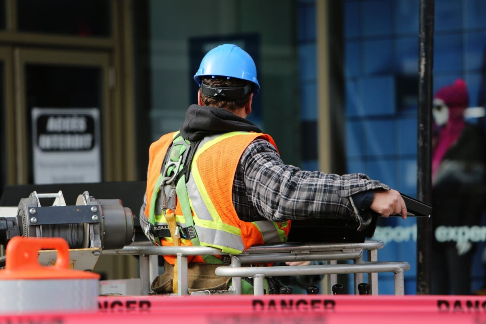

MERT SEFA ÜNAL
İŞ SAĞLIĞI VE GÜVENLİĞİ UZMANI
İŞ GÜVENLİĞİ UZMANI
Hastanelerden bankalara, Alış veriş merkezleri(AVM) ‘nden restoran ve okullara kadar farklı yerlerde iş güvenliği uzmanı(igu) olarak çalıştım. Doğrudan sahada çalışmanın getirdiği sorumlulukları üstlendim. Çalıştığım alanlarda sorumlu olduğum yerleri baştan sona gezerek tespit ve önerilerde bulundum. Dokümantasyonları denetledim ve eksikleri belirleyerek tamamlanma planlarını yaptım ve uyguladım. İSG kurul toplantılarını organize ettim ve yönettim.
İş güvenliğinin en önemli kısmının gözlemlemek olduğunu söylemek yanlış olmaz. Bu gözlemleme süreci içerisinde hem çalışma çevresini hem de çalışmaları ayrı bir dikkat ile izlemek gerekmektedir. İş sağlığı ve güvenliği çalışmaları en temelinde insan hayatını bulundurduğu için; yapılan işin doğrudan insan hayatları ile bağlantılı olduğunun bilinciyle hareket etmek hem uzmanı hem de çevresini geliştirir.
Hem doğrudan gözlemlerimde hem de dokümantasyon incelemelerimde bilgi ve bilgilerimi arttırarak ilerledim. Öyle ki kısa sürede yeni başladığım projelere de kendimi kolayca kabul ettirdim. İş sağlığı güvenliğinin temelindeki insan faktörü yanında işin devamını da gözeterek riskleri en aza indirme gayreti ile çalışmaları yaptım.
 AVM, hastane, banka, restoran ve okul gibi çalışma alanı çevresini ve çalışmaları baştan sona inceleyerek her alanda farklı deneyimler edindim. Dış cephe asansörü kontrolü ve yüksekte çalışma ekipmanlarının denetiminde bulundum. Risk değerlendirme çalışmaları, tespit ve öneriler, tatbikat kontrolleri, acil durum planlarının hazırlanması, isg kurullarının yapılması gibi İSG mevzuatlarının gerektirdiği tüm çalışmaları gerçekleştirdim. Kısaca yetkinlikler:
AVM, hastane, banka, restoran ve okul gibi çalışma alanı çevresini ve çalışmaları baştan sona inceleyerek her alanda farklı deneyimler edindim. Dış cephe asansörü kontrolü ve yüksekte çalışma ekipmanlarının denetiminde bulundum. Risk değerlendirme çalışmaları, tespit ve öneriler, tatbikat kontrolleri, acil durum planlarının hazırlanması, isg kurullarının yapılması gibi İSG mevzuatlarının gerektirdiği tüm çalışmaları gerçekleştirdim. Kısaca yetkinlikler:
- Saha Denetimi
- Dokümantasyon
- Risk Değerlendirmesi
- Acil Durum Planı
- Tatbikat
- İSG Kurulu
- İSG Eğitimi
- Tespit ve Öneri